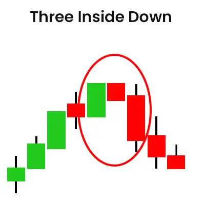

यह कैंडलस्टिक पैटर्न एक बुलिश ट्रेंड के बाद होता है। उदाहरण के लिए, इस पैटर्न में एक एकल लंबा बुलिश कैंडल के बाद दो थोड़े छोटे बियरिश कैंडल होते हैं।
जब यह पैटर्न अपट्रेंड के ऊपरी हिस्से में प्रकट होता है, तो यह एक बियरिश रिवर्सल संकेत देता है, जिसमें एसेट की कीमत गिरती है।
| Formation |
चलो चर्चा करते हैं कि यह कैंडलस्टिक पैटर्न कैसे बनता है -
सबसे पहले, एक मजबूत बुलिश ट्रेंड के लिए कैंडलस्टिक चार्ट देखें। बुलिश ट्रेंड ढूंढने के बाद एक लंबा बुलिश कैंडल ढूंढें। तीन इनसाइड-डाउन पैटर्न में पहला कैंडल यही होता है।
लंबे बुलिश कैंडल को खोजने के बाद, चार्ट्स पर एक छोटी बियरिश कैंडल ढूंढें। आशावादी रूप से, दूसरा कैंडल छोटा होना चाहिए और पहले लंबे बुलिश कैंडल के अंदर सीमित होना चाहिए।
पैटर्न के पहले दो कैंडल एक बियरिश हरामी जैसे होने चाहिए। इस पैटर्न का यह स्टेज महत्वपूर्ण होता है। इसलिए, अगर पैटर्न के दूसरे कैंडल को इन आवश्यकताओं को पूरा करते हुए पाया जाता है, तो केवल उस समय ट्रेड में जाने का विचार करें।
| What Traders Interpret from a Three Inside Down Pattern? |
जैसा कि आप नीचे दिए गए चार्ट में देख सकते हैं, एसेट की कीमत ऊपर जा रही है, जिससे पता चलता है कि बाजार में बुल्स का पक्का कब्जा है। तीन इनसाइड-डाउन कैंडलस्टिक पैटर्न में से पहला पैटर्न ट्रेंड के अनुसार अनुकूल बंद होता है। कैंडल का शरीर लंबा लगता है, जहां बुल्स शक्तिशाली रूप से शासित होते हैं, जिससे पता चलता है कि ट्रेंड जारी रहेगा।
दूसरी कैंडल, वहीं पर, 'गैप डाउन' के साथ शुरू होती है। बुल्स अपने ट्रेंड से पूरी तरह से बेख़बर हो जाते हैं और चिंतित हो जाते हैं जब एक मजबूत उठान के बीच में अचानक एक अपेक्षाकृत डाउन-मूव होता है।
ध्यान रखने योग्य एक बात है। तीसरी बियरिश कैंडल, पहली लंबी बुलिश कैंडल और दूसरी छोटी बियरिश कैंडल से नीचे बंद होना चाहिए ताकि तीनों अंदर से निचले वाले कैंडलस्टिक्स पैटर्न प्रभावी हो सकें। इसलिए तीसरी सत्र में यह बड़ी नीचे की गति बियरिश ट्रेंड के पलटने की पुष्टि करती है।